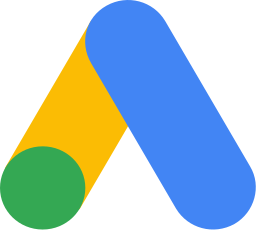

Perguntas do Google (People Also Ask): instale a extensão no computador. Instalar extensão
Não mostramos volume de busca: o Google não entrega esse número de graça. A ordem é a posição em que o Google sugeriu cada termo, não quantas pessoas pesquisam.
Extensão AskWheel PAA
Com a extensão, o People Also Ask do Google aparece sozinho a cada busca: ela abre a busca no Google numa aba em segundo plano, lê as perguntas, traz o mapa para cá e fecha a aba. Não guarda nada e não envia dados para nenhum outro lugar.
Chrome, Edge, Brave, Opera, Vivaldi
- Descompacte o .zip numa pasta que você não vai apagar.
- Abra
chrome://extensions(no Opera,opera://extensions) e ligue o Modo do desenvolvedor. - Clique em Carregar sem compactação e escolha a pasta.
Firefox
- Descompacte o .zip.
- Abra
about:debugging#/runtime/this-firefoxe clique em Carregar extensão temporária. - Escolha o arquivo
manifest.jsonda pasta. A extensão some quando o Firefox fecha.
Depois, recarregue esta página e busque. Se o Google pedir verificação ou mostrar a tela de cookies, a aba dele fica aberta para você resolver.
Sem extensão: usar um favorito
- Arraste este botão para a barra de favoritos (só na primeira vez): AskWheel PAA
- Busque a palavra no Google (ou abra o Google) e, na página de resultados, clique no favorito.
- Em uns 20 segundos você volta para cá com tudo: as rodas e o mapa de perguntas.
Veja o que as pessoas perguntam no Google sobre qualquer assunto
Digite uma palavra. O AskWheel consulta o autocomplete do Google e do Google Shopping direto do seu navegador e separa cada sugestão em perguntas, comparações, para quê e com o quê, e de A a Z.
Grátis, sem cadastro e sem limite de buscas.
Todas as sugestões de uma palavra, numa roda só
Google e Google Shopping respondem lado a lado. A roda agrupa as sugestões pela palavra que as começa; a tabela lista cada uma para copiar com um clique.
Como funciona uma busca
-
Digite a palavra e escolha o idioma
O idioma da busca é separado do idioma do site: dá para usar o site em italiano e buscar em português.
-
Veja cada fonte chegar
Google e Google Shopping aparecem com a sua contagem, assim você sabe quem respondeu e quantos termos trouxe.
-
Copie um termo ou exporte tudo
Copie uma sugestão, guarde na cesta de uma busca para a outra ou baixe um CSV com a palavra, o idioma e a data.
Perguntas do Google, lidas de uma página real
A extensão abre o Google numa aba em segundo plano, lê o quadro “As pessoas também perguntam” e traz o mapa para cá. Sem extensão, um favorito clicado no google.com faz o mesmo. Só no computador.
Leve os termos para onde você trabalha
Três fontes viram uma lista. Um CSV ou um clique em copiar leva tudo para uma planilha, uma página ou um grupo de anúncios.
 Google
Google- Google Shopping
- Perguntas do Google
 Google Sheets
Google Sheets Excel
Excel- Notion

Google Ads
Dúvidas
O que o AskWheel mostra, o que ele não alcança e para onde vai a sua busca.